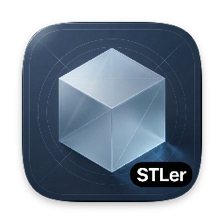
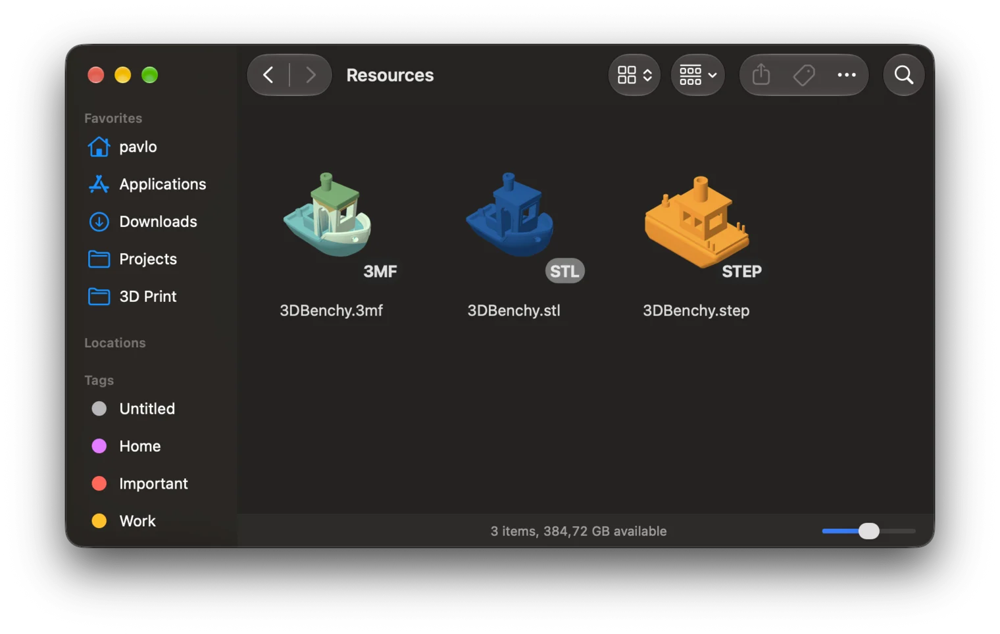
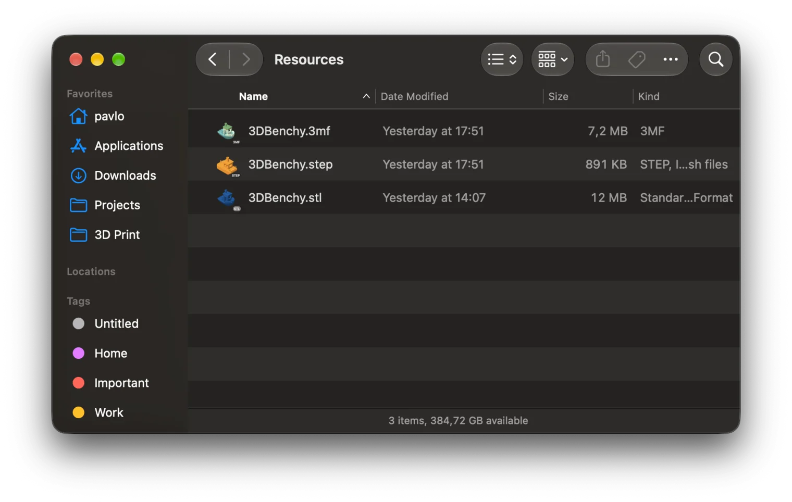
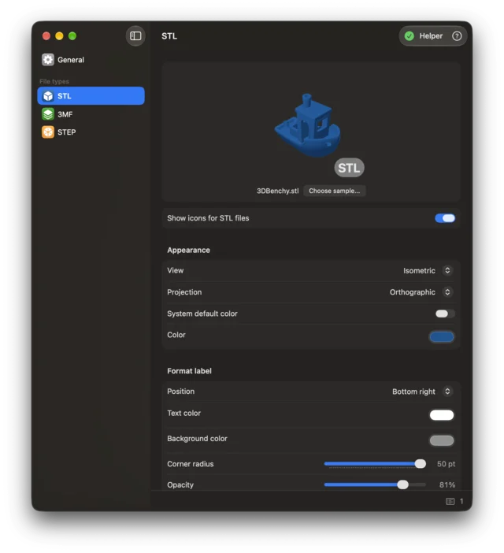
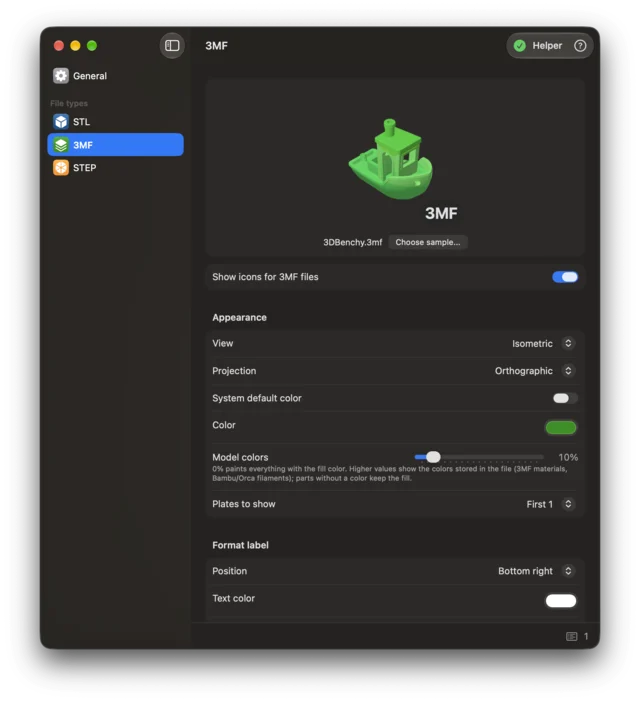
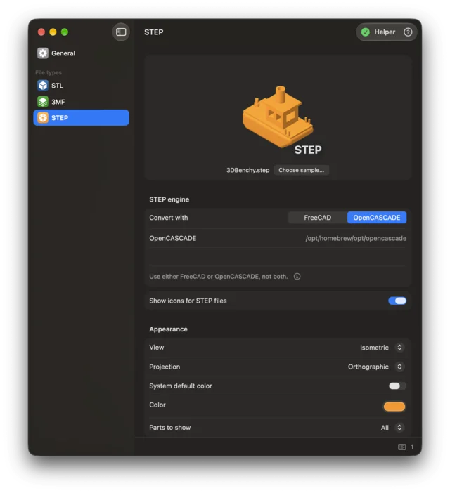
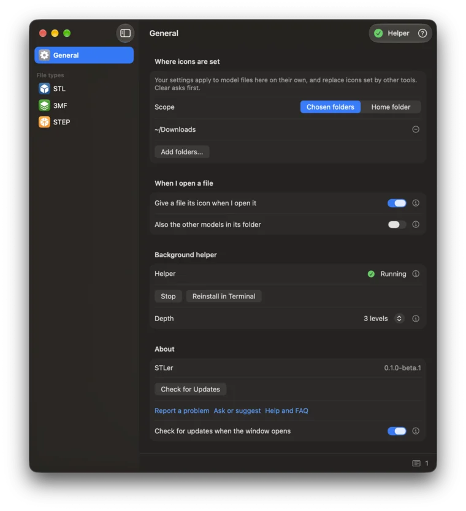

STLer
Finder icons for STL, 3MF and STEP files
STLer draws a small picture of the model itself and sets it as the file's icon, so you see what is inside before you open it.
macOS 13 or newer. Free and open source (MIT). The beta is not notarized yet, see Install.

Features
Icons from the model
Every .stl, .3mf and .step gets a small picture of its own geometry, from any standard view, orthographic or perspective.
Your look, per file type
Colour, view, an optional format label with its own colours, rounding and opacity. A live preview on a Benchy while you change things.
3MF projects
Bambu Studio and Orca plates: show the first 1, 2, 3 or all. A slider blends the colours stored in the file with your fill colour.
STEP assemblies
Converted with FreeCAD or with OpenCASCADE, one click to install. Limit big assemblies to the first parts so the picture stays readable.
Keeps itself up to date
A small background helper gives new downloads, the folder you open in Finder, and files you open from a flash drive their icons.
Safe by design
File contents and modification dates stay as they were. Clear removes only icons STLer made, never ones you set yourself.

A settings page per file type
Each type has its own view, projection, color, format label and a live preview. A change applies to your files on its own a second after you stop.



How it works
macOS has its own thumbnail for STL files, and an app cannot replace it. So STLer renders each model off-screen with SceneKit and sets the picture as the file's own custom icon, the same thing you do by pasting an icon in Get Info, only automatic.
The app window applies your settings to the files that exist now. The stler command line tool, started at login, keeps watching so files that arrive later get their icons too, also when the window is closed.

Formats
STL, 3MF and STEP work today. This is what could come next. The colour tells how likely it is.
| Format | Status | Notes |
|---|---|---|
| STL, 3MF, STEP / STP | Done | |
| OBJ, PLY | Planned | Read by macOS itself, same path as STL. |
| IGES / IGS | Planned | Same engines as STEP, another reader. |
| AMF | Maybe | Open XML like 3MF, needs its own loader, little used. |
| F3D (Fusion) | Maybe | Only the preview picture stored inside the file can be read, so the icon would be Fusion's, not ours. |
| USDZ, ABC | Maybe | Readable by macOS, rarely needed for printing. |
| glTF, GLB, DAE | Maybe | Open formats, but macOS cannot read them, a parser would be needed. |
| FBX | Unlikely | Autodesk format, the official SDK has a restrictive licence. |
| SLDPRT, IPT, CATPART | Unlikely | Closed CAD formats, unreadable without the vendors' software. |
done or planned maybe unlikely: closed format or licence. Want one of them? Open an issue on GitHub.
Install
- Download the latest
STLer-…-macos.zipfrom Releases and unpack it. - Move
STLer.appto Applications. The beta is not notarized: the first time, right-click the app and choose Open, or run:xattr -dr com.apple.quarantine /Applications/STLer.app
- Open it. The welcome sheet explains the rest and offers to install
stler follow.
The command line tool is in the same archive. stler --help lists everything: run, follow, reset, config, install, update.
Privacy
STLer works on your machine and sends nothing about you or your files anywhere. The only network request is the optional update check: it asks GitHub for the public list of STLer releases, at most once a day, and you can switch it off in General. OpenCASCADE, if you choose it for STEP, is downloaded by Homebrew in a Terminal window you can watch.
Download STLer for macOS
Free, open source and ready to try. The beta runs on macOS 13 or newer.